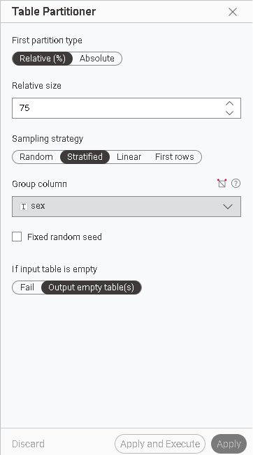
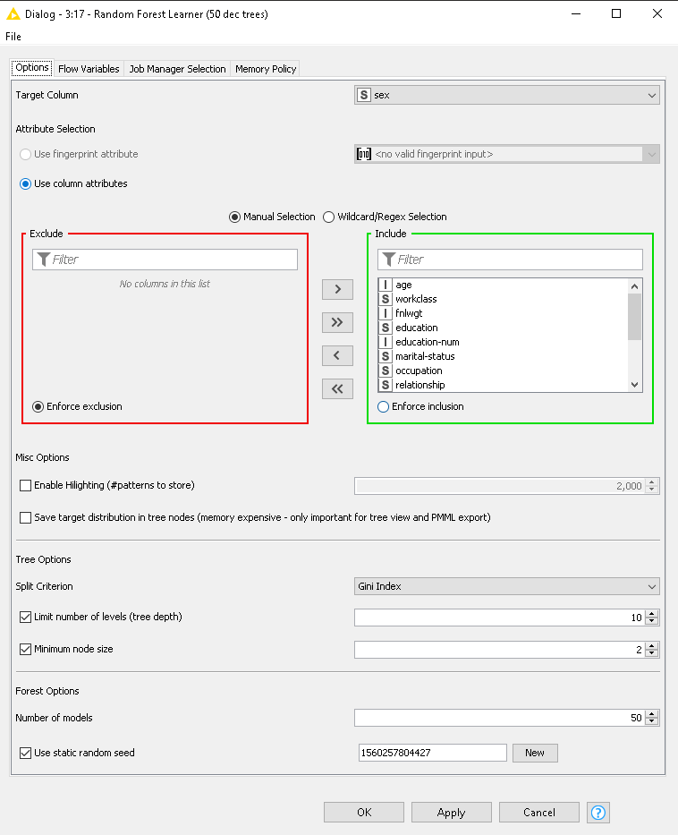
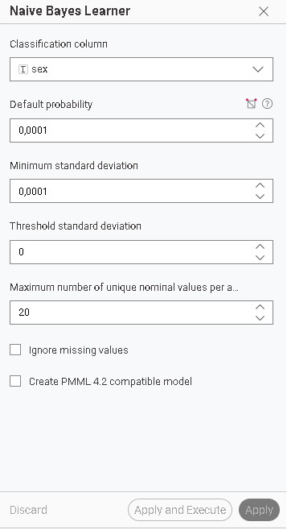
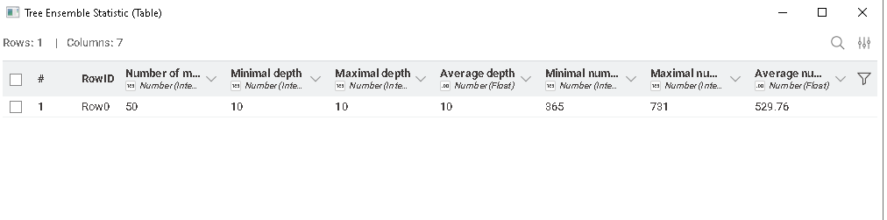
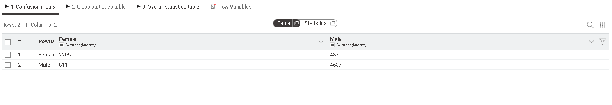
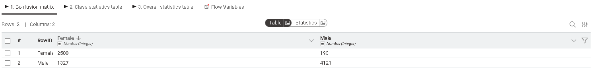

Laporan Analisis Klasifikasi Prediksi Pendapatan (Dataset Adult)#
Laporan ini disusun untuk analisis data mining menggunakan software Knime.
1. Penjelasan Dataset#
Dataset adult.csv (Census Income) digunakan untuk memprediksi apakah pendapatan seseorang melebihi $50.000 per tahun berdasarkan data sensus.
Karakteristik Data:
Target:
income(<=50K atau >50K).Fitur Kategorikal:
workclass,education,marital-status,occupation,relationship,race,sex,native-country.Fitur Numerik:
age,fnlwgt,education-num,capital-gain,capital-loss,hours-per-week.
2. Metodologi (Workflow Orange3)#
Proses analisis dilakukan dengan alur kerja visual berikut:

Alur kerja mencakup pemuatan data, pengambilan sampel (Data Sampler), pelatihan model (Random Forest & Naive Bayes), serta evaluasi hasil.
3. Konfigurasi Model#
A. Random Forest#
Model ini dikonfigurasi dengan 10 pohon keputusan dan pembatasan kedalaman maksimal 10 untuk mencegah overfitting.

B. Naive Bayes#
Model ini menggunakan pendekatan probabilistik standar untuk klasifikasi.

4. Analisis Hasil Evaluasi#
Evaluasi dilakukan menggunakan metode pengujian pada data uji (Test on test data).

Model |
AUC |
CA (Accuracy) |
F1 |
Precision |
Recall |
|---|---|---|---|---|---|
Random Forest |
0.903 |
0.852 |
0.849 |
0.847 |
0.852 |
Naive Bayes |
0.892 |
0.825 |
0.829 |
0.838 |
0.825 |
Interpretasi: Random Forest mengungguli Naive Bayes di hampir semua kategori metrik, terutama pada akurasi klasifikasi (CA) yang mencapai 85.2%.
5. Analisis Confusion Matrix#
Confusion Matrix digunakan untuk melihat seberapa detail model salah memprediksi kelas tertentu.
Confusion Matrix: Random Forest#

Random Forest sangat kuat dalam memprediksi kelas<=50K, namun terdapat 893 kesalahan prediksi pada kelas >50K (False Negative).
Confusion Matrix: Naive Bayes#

Naive Bayes lebih agresif dalam memprediksi kelas>50K (berhasil menangkap 1964 data), tetapi memiliki tingkat False Positive yang tinggi (1322 data <=50K salah dikira >50K).
6. Kesimpulan Akhir#
Model Random Forest adalah pilihan terbaik untuk dataset ini jika tujuan utamanya adalah akurasi total. Namun, jika fokusnya adalah mendeteksi sebanyak mungkin orang berpendapatan tinggi (Recall tinggi untuk >50K), maka Naive Bayes memberikan hasil yang lebih kompetitif meskipun dengan risiko kesalahan prediksi positif yang lebih besar.